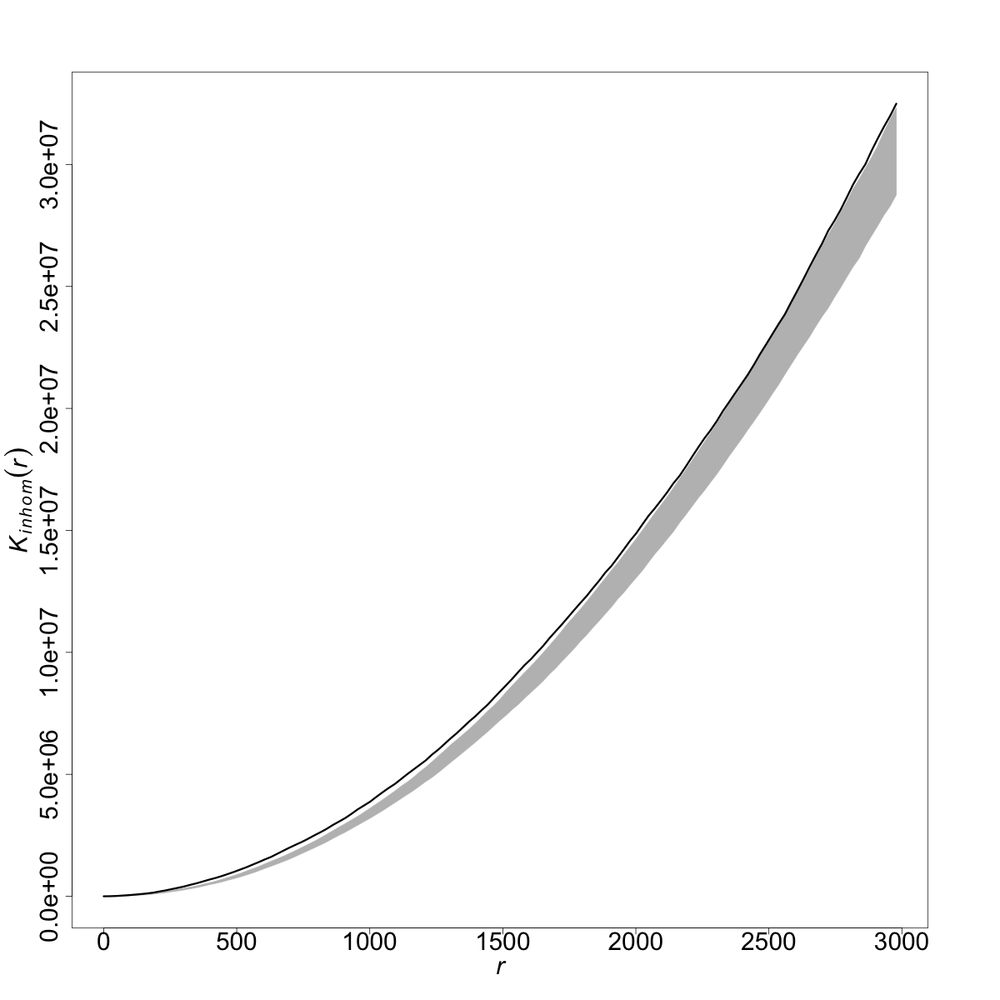
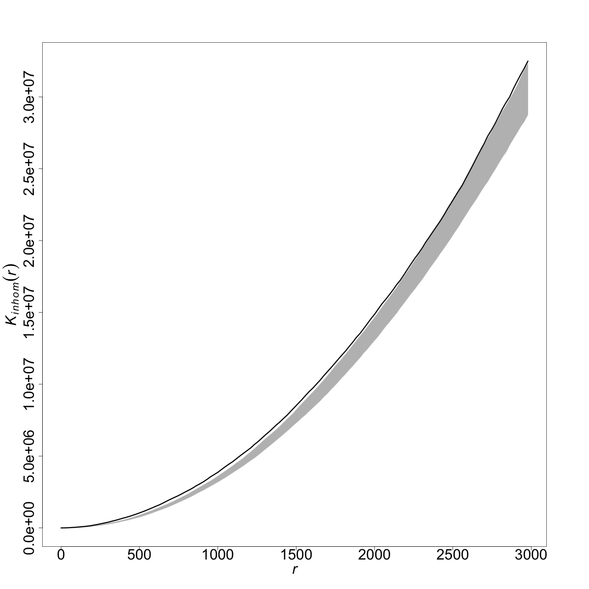

Capítulo 43 Procesos de punto
Jorge Mateu y Mehdi Moradi
43.1 Spatial point patterns on \(\mathbb R^2\)
Let \({\mathbf x}=\{ x_1, x_2, \ldots, x_n \}, 0 \leq n < \infty,\) be an observed realisation of a simple (i.e no multiple events per location) and finite point process \(X\) on \(\mathbb R^2\) within the window \(W \subset \mathbb R^2\) and with the associated distance metric \(d(u,v)\). For any arbitrary set \(A \subset \mathbb R^2\), the cardinality of \(X\) is governed by the count function
\[\begin{equation*} N(X \cap A) = \sum\limits_{x \in X} {\mathbf 1} \{ x \in A \} < \infty . \end{equation*}\]
Moreover, according to the Campbell formula , for any measurable function \(f: \mathbb R^2 \to [0, \infty)\) we have
\[\begin{equation*}\label{eq:compR2} \mathbb{E} \left[ \sum\limits_{x \in X} f(x) \right] = \int_{\mathbb R^2} f(u) \lambda(u) \mathrm{d}u, \end{equation*}\] where \(\lambda (\cdot)\) is called the intensity function of \(X\), and governs its spatial distribution. In fact, \(\lambda(u)\) gives the expected number of points per unit area in the vicinity of \(u \in \mathbb R^2\). Letting \(f(x) = {\mathbf 1} \{ x \in A \}\), we can easily see the relationship between the intensity function \(\lambda(\cdot)\) and the count function \(N\) as
\[\begin{equation*} \mathbb{E} \left[ N(X \cap A) \right] = \int_A \lambda(u) \mathrm{d}u. \end{equation*}\]
If the intensity function \(\lambda(\cdot)\) is constant, i.e. \(\lambda(\cdot) = \lambda\), the process \(X\) is called homogeneous, otherwise it is called inhomogeneous, meaning that its spatial distribution varies over its state space. For further details we encourage the interested reader to see .
In practice one often observes a single realisation, thus it is of great importance to have an estimate of \(\lambda(\cdot)\) that can mimic the spatial distribution of the underlying process, which is supposed to have generated the observed pattern. Hence, we next go through different non-parametric intensity estimators.
43.1.1 Kernel-based intensity estimation
The two most frequently used non-parametric kernel-based intensity estimators for spatial point patterns on \(\mathbb R^2\) are \[\begin{equation} \label{e:kde.2D.unif} \widehat \lambda^{\text{U}}_{\sigma}(u) = \frac{1}{c_{\sigma,W}(u)} \sum_{i=1}^n \kappa_{\sigma}(u - x_i), \quad u \in W, \end{equation}\] and \[\begin{equation} \label{e:kde.2D.JD} \widehat \lambda^{\text{JD}}_{\sigma}(u) = \sum_{i=1}^n \frac{\kappa_{\sigma}(u - x_i)}{c_{\sigma,W}(x_i)}, \quad u \in W, \end{equation}\] where \(\kappa_{\sigma}\) is a probability density function on \(\mathbb R^2\) with bandwidth \(\sigma\), and
\[\begin{equation}
\label{e:cW}
c_{\sigma,W}(u)
=
\int_W \kappa_{\sigma}(u - v) \mathrm{d}v,
\quad u \in W,
\end{equation}\]
is the mass of the kernel centred at \(u \in W\), and plays the role of an edge corrector to compensate for lack of information outside \(W\). Note that we, in practice, only see a realisation of \(X\) within a bounded/limited domain \(W\). Regardless of the choice \(\sigma\), the estimator \(\eqref{e:kde.2D.unif}\) is pointwise unbiased if the true intensity function is constant , while the estimator \(\eqref{e:kde.2D.JD}\) conserves the total mass . We note that the estimators \(\eqref{e:kde.2D.unif}\) and \(\eqref{e:kde.2D.JD}\) are often called uniformly-edge-corrected and Jones-Diggle . Throughout, we consider the well-known Gaussian kernel function
Regarding practical concerns, the performance of kernel-based intensity estimators strongly depends on the bandwidth parameter, so that a small bandwidth leads to an under-smoothed estimate (low bias and high variance) whereas a large bandwidth results in an over-smoothed estimate (high bias and low variance). For a given point pattern \({\mathbf x}\), the estimators \(\eqref{e:kde.2D.unif}\) and \(\eqref{e:kde.2D.JD}\) can be calculated using the function from by specifying and , respectively.
43.1.1.1 Bandwidth selection
proposed to choose the bandwidth through the rule of thumb
\[ (s_x n^{-1/6}, s_y n^{-1/6}), \] for each of the \(x,y\) Cartesian coordinates, in which \(s_x, s_y\) stand for the sample standard deviation of the \(x,y\) coordinate values of data locations. Despite being a rule of thumb, this procedure can be quite useful for exploratory analysis. The function from calculates such rule of thumb.
proposed to find an optimum bandwidth by minimising
\[ CvL(\sigma) = \left( |W| - \sum\limits_{i=1}^n 1 / \widehat{\lambda}^*_{\sigma}(x_i) \right)^2, \] where \(\widehat{\lambda}^*_{\sigma}(x_i)\) is a non-corrected intensity estimate (either of \(\eqref{e:kde.2D.unif}\) or \(\eqref{e:kde.2D.JD}\) without the correction term) at \(x_i\) using the bandwidth \(\sigma\). The idea behind this proposal lies on the fact that, using Campbell formula, we have
\[ \mathbb{E} \left[ \sum\limits_{x \in X} 1 / \lambda(x) \right] = \int_W (1 / \lambda(x) ) \lambda(x) \mathrm{d}u = |W|. \] For a given point pattern \({\mathbf x}\), the function from calculates the bandwidth using Cronie and van Lieshout’s criterion.
43.1.2 Practical examples
We next employ the above-mentioned intensity estimators and bandwidth selection approaches to study the spatial distribution of two datasets: Wildfire in Nepal (Figure ??), and Crime in Medellín, Colombia (Figure ??). Throughout this section, we make use of the packages for point pattern analysis and for graphical representations. We add that the package is recently divided into a family of sub-packages , , , , , , , so that itself acts as an umbrella package. We warn the readers to be aware of future changes of to comply with CRAN’s suggestions concerning package size.
43.1.2.1 Example 1: Wildfires in Nepal
By courtesy of Ganesh Prasad Sigdel, we present here the following data for Nepal which contains (forest) wildfires in Nepal as geo-referenced point data during 2016, obtained from ICIMOD-Nepal. During the studied period Nepal experienced 5757 forest fires in which 475 of them happened in Surkhet District that is a district in Karnali Province of mid-western Nepal. We below begin with loading the essential packages for this section.
library(spatstat)
library(raster)Below we estimate the smoothing bandwidth parameter for the considered forest fire data using the reviewed methods in Section \(\ref{sec:bw}\). Scott’s rule gives (50253.47 m, 21158.42 m) and Cronie and van Lieshout’s criterion (CvL) estimates the bandwidth as 36513.16 m. We note that one may wish to search for an optimum bandwidth over a finer grid of possible values. This can currently be controlled by arguments for .
data(nepal)
scott_nepal <- bw.scott(nepal) # Scott’s rule
CvL_nepal <- bw.CvL(nepal) # Cronie and van Lieshout’s criterioHaving estimated bandwidth through different methods, we next estimate the intensity of the wildfire data by employing the intensity estimators \(\eqref{e:kde.2D.unif}\) and \(\eqref{e:kde.2D.JD}\). The function provides kernel-based intensity estimation for point patterns on \(\mathbb R^2\), noting that as default it currently makes use of the uniformly-edge-corrected estimator \(\eqref{e:kde.2D.unif}\) with the Gaussian kernel function. We set to not calculate the so-called leave-one-out estimator, and to force density values to be positive. We note that due to numerical errors inherent in the Fast Fourier Transform (finite-precision arithmetic) we might get quite small negative values in very sparse areas, see the help page of .
d_scott_nepal <- density.ppp(nepal, sigma = scott_nepal, leaveoneout = FALSE, positive = TRUE)
d_cvl_nepal <- density.ppp(nepal, sigma = CvL_nepal, leaveoneout = FALSE, positive = TRUE)Now we turn to estimate the intensity through the Jones-Diggle estimator \(\eqref{e:kde.2D.unif}\) by setting in .
d_scott_dig_nepal <- density.ppp(nepal, sigma = scott_nepal, leaveoneout = FALSE, positive = TRUE, diggle = TRUE)
d_cvl_dig_nepal <- density.ppp(nepal, sigma = CvL_nepal, leaveoneout = FALSE, positive = TRUE, diggle = TRUE)Having obtained different intensity estimates after considering distinct bandwidth selection approaches, we next aim to show the obtained estimates and discuss their possible discrepancies. For a better graphical representation, we convert the obtained intensity images from class to objects of class and then merge them into a . Figure 43.1 shows different intensity estimates in which a high intensity is assigned to the south and south-west of Nepal highlighting a non-uniform distribution for the forest fire data. The slight difference between the maps generated by the Scott’s rule and CvL is that, unlike CvL, Scott’s rule further discloses an area of higher intensity in the south-west.
sp_int_nepal <- stack(raster(d_scott_nepal), raster(d_cvl_nepal), raster(d_scott_dig_nepal), raster(d_cvl_dig_nepal))
sp_int_nepal <- sp_int_nepal * 10^7
names(sp_int_nepal) <- c("scott_gaus_U", "CvL_gaus_U", "scott_gaus_JD", "CvL_gaus_JD")
at <- c(seq(0, 1.4, 0.2))
pts_nepal <- as.data.frame(nepal)
coordinates(pts_nepal) <- ~ x + y
spplot(sp_int_nepal, at = at, scales = list(draw = FALSE), col.regions = rev(topo.colors(20)), colorkey = list(labels = list(cex = 3)), par.strip.text = list(cex = 3)) + layer(sp.points(pts_nepal, pch = 20, col = 1))
Figura 43.1: Kernel-based intensity estimation for the wildfire data in Nepal during 2016. Layer’s names start with bandwidth selection approach followed by the employed kernel and the edge-correction. Intensity values are forest fires per ten thousand km.
43.1.2.2 Example 2: Crimes in Medellín
Medellín is the second most populated city in Colombia with an urban territory enclosing an area of roughly \(105\)km\(^2\). Medellín has suffered with crime for many years, being known as home of dangerous criminals. In 2018 Secretariat of Security of Medellín reported that \(40\%\) of the citizens felt insecure, having delivered about 20607 theft complaints . In addition, the police department recognises the need of hiring almost 2000 more policemen to fight against homicide, theft and micro-traffic.
In this chapter, we only analyse the spatial distribution of the locations of crimes occurred in Medellín during 2005 . During 2005, 910 crimes are committed for which the percentage of men being victims is \(66\%\), \(28\%\) of crimes correspond to weekends, the percentage of hold-up theft is \(42\%\) being the most common type, and the percentage of victims having an age between 20 and 40 increases up to \(60\%\).
We point out that this dataset contains types of crimes which do not necessarily happen over the street network of Medellín such as card cloning, hoax, scopolamine-related, etc. Thus, we consider this dataset as a point pattern on \(\mathbb R^2\). One could, however, make a classification of crime types.
data(medellin)
scott_med <- bw.scott(medellin) # Scott’s rule
CvL_med <- bw.CvL(medellin) # Cronie and van Lieshout’s criterioThe Scott’s rule estimates the bandwidth as (691.31m, 954.20m) and CvL leads to 692.31m. Then, similar to the case of wildfires in Nepal, we make use of the function to compute the intensity estimators \(\eqref{e:kde.2D.unif}\) and \(\eqref{e:kde.2D.JD}\) under the same settings as Section \(\ref{sec:nepalfire}\).
# uniformly-edge-corrected estimator and Gaussian kernel
d_scott_med <- density.ppp(medellin, sigma = scott_med, leaveoneout = FALSE, positive = TRUE)
d_cvl_med <- density.ppp(medellin, sigma = CvL_med, leaveoneout = FALSE, positive = TRUE)
# Jones-Diggle estimator and Gaussian kernel
d_scott_dig_med <- density.ppp(medellin, sigma = scott_med, leaveoneout = FALSE, positive = TRUE, diggle = TRUE)
d_cvl_dig_med <- density.ppp(medellin, sigma = CvL_med, leaveoneout = FALSE, positive = TRUE, diggle = TRUE)Figure 43.2 shows the estimated intensities using different choices of bandwidth selection methods. At a glance, we can generally see a non-uniform distribution for crimes in Medellín. Regardless of the choice of methodology for choosing bandwidth, the estimates highlight two big hotspots in the central area of Medellín, possibly with different radius, slight difference in other areas. Similar to the case of wildfires in Nepal, one can see that the effect of edge-corrections are marginal.
sp_int_med <- stack(raster(d_scott_med), raster(d_cvl_med), raster(d_scott_dig_med), raster(d_cvl_dig_med))
sp_int_med <- sp_int_med * 10^5
names(sp_int_med) <- names(sp_int_nepal)
at <- seq(0, 3, by = 0.2)
pts <- as.data.frame(medellin)
coordinates(pts) <- ~ x + y
spplot(all, at = at, scales = list(draw = FALSE), col.regions = rev(topo.colors(20)), colorkey = list(labels = list(cex = 3)), par.strip.text = list(cex = 3)) + layer(sp.points(pts, pch = 20))
Figura 43.2: Kernel-based intensity estimation for the crime data in Medellín, Colombia, during 2005. Layer’s names start with bandwidth selection approach followed by the employed kernel and the edge-correction. Intensity values are crime per haundred km.
43.1.3 Kernel-based intensity estimation over irregular domains
The estimators \(\eqref{e:kde.2D.unif}\) and \(\eqref{e:kde.2D.JD}\) may suffer from important issues such as tunnelling the mass, bias near the boundary, simultaneous over- and under-smoothing artefacts, leading to physically implausible results under certain situations . These problems are more noticeable when data are observed over an irregular domain. As a remedy proposed to estimate the intensity via the heat kernel which can be defined as the transition probability density of a Brownian motion on \(W\) that respects a boundary. Indeed, their proposal, which is called the diffusion estimator, is of the form
\[\begin{equation}\label{eq:heat} \widehat \lambda_t (u) = \sum\limits_{i=1}^n \kappa_t (u|x_i) , \end{equation}\] where \(t= \sigma^2\) (\(\sigma\) being the smoothing bandwidth in \(\eqref{e:kde.2D.unif}\) and \(\eqref{e:kde.2D.JD}\)) and \(\kappa_t (\cdot|x_i)\) is the heat kernel. This estimator is both unbiased, under homogeneity, and mass-conserving simultaneously. further extended some of the bandwidth selection approaches to their proposal including the likelihood cross validation and Cronie–Van Lieshout criterion. The diffusion estimator above is currently accessible through the function , the versions of Cronie and Van Lieshout criterion and likelihood cross validation to find an optimum bandwidth are accommodated in the functions and . All such functions belong to .
Below we employ the diffusion estimator to briefly see its performance compared to that of \(\eqref{e:kde.2D.unif}\) through an application of active fires within USA and Central America (discarding the islands) from 24th February to 3rd March 2022. Active fires refer to Near Real-Time (NRT) fire/thermal anomaly data which represents the centres of some 1km pixels that are flagged by an algorithm as containing one or more fires. The locations do not necessarily confirm fires, but rather susceptible pixels for which the difference between the land cover around them and a potential fire meets a given threshold.
The smoothing bandwidths for the computation of both estimators \(\eqref{e:kde.2D.unif}\) and \(\eqref{eq:heat}\) are chosen by the Cronie and Van Lieshout criterion. Here, due to dealing with a quite bigger area compared to our previous examples, we consider , meaning that a vector of size 50 is used to search for an optimum bandwidth (default is 16), and to get intensity images with better resolution (default is an image of size \(128\times128\)). The chosen bandwidths to compute \(\eqref{e:kde.2D.unif}\) and \(\eqref{eq:heat}\) are approximately 556.3km and 104.9km.
data(activefires)
CvL_northcentre <- bw.CvL(activefires, ns = 50)
d_CvL_northcentre <- density.ppp(activefires, sigma = CvL_northcentre, leaveoneout = FALSE, dimyx = 512)
heat_CvL_northcentre <- bw.CvLHeat(activefires, ns = 50)
dheat_CvL_northcentre <- densityHeat(activefires, sigma = heat_CvL_northcentre, leaveoneout = FALSE, dimyx = 512)Both estimates are merged into a object which is represented in Figure 43.3. The domain in this example is not regular; the Florida state, (south) lower California state, and all Central America makes the studied region quite irregular. In such a situation, it might be quite an implausible result if our estimate transfers kernel mass across the gulf of California/Mexico between two halves. The intensity map on the left-hand side of Figure 43.3 shows that the uniformly-edge-corrected estimate suffers from tunnelling the mass across the region. However, the intensity map on the right-hand side, obtained by the diffusion estimator, shows quite less mass migration, and seems to be more realistic if one takes into account the spatial distribution of points.
d_northcentre_stack <- stack(raster(d_CvL_northcentre), raster(dheat_CvL_northcentre))
names(d_northcentre_stack) <- c("CvL_gaus_U", "Diffusion")
pts_northcentre <- as.data.frame(activefires)
coordinates(pts_northcentre) <- ~ x + y
d_northcentre_stack <- d_northcentre_stack * 10^6
spplot(d_northcentre_stack, scales = list(draw = FALSE), col.regions = rev(terrain.colors(20)), colorkey = list(labels = list(cex = 5)), par.strip.text = list(cex = 5)) + layer(sp.points(pts_northcentre, pch = 20, col = 1))
Figura 43.3: Kernel-based intensity estimation for the active fires within USA and Central America (discarding the islands) from 24th February to 3rd March 2022. Left: uniformly-edge-corrected estimate with Gaussian kernel, Right: diffusion estimate. Equivalently optimum bandiwdth for both methods are chosen by the Cronie and Van Lieshout criterion. Intensity values are fires per thousand km
43.1.4 Voronoi-based intensity estimators
As previously noted, the performance of kernel-based intensity estimators strongly depends on the smoothing parameter bandwidth, and even more, so it might be quite hard (if not impossible) to find a single fixed bandwidth which smooths the intensity equally fine over the spatial domain \(W\) when there are abrupt changes in the spatial distribution of points. A spatially-varying (adaptive) bandwidth was then suggested to overcome such issues, but at the cost of increased complexity . As an alternative approach, and to avoid the need for bandwidth parameter selection in advance, one can employ Voronoi-based intensity estimators which are fully non-parametric .
For any \(x\in{\mathbf x}\), its associated Voronoi/Dirichlet cell \({\mathcal V}_{x}\) that consists of all \(u \in W\) which are closer to \(x\) than any other \(y\in{\mathbf x}\setminus\{x\}\), is given by \[\begin{align} \label{VorCell} {\mathcal V}_{x} = \{ u \in W: d(x,u) \leq d(y,u) \text{ for all } y\in {\mathbf x}\setminus\{x\}\}. \end{align}\] The Voronoi-based intensity estimator, at any arbitrary point \(u \in W\), is then of the form
\[\begin{align} \widehat{\lambda}^{V}(u) = \sum_{x\in {\mathbf x}} \frac{{\mathbf 1}\{u\in{\mathcal V}_{x}\}}{|{\mathcal V}_{x}|}. \label{Vor} \end{align}\]
The estimator \(\widehat{\lambda}^{V}(u)\) conserves mass (similar to \(\widehat \lambda^{\text{JD}}_{\sigma}(u)\)), and is simultaneously unbiased when the true intensity is constant (similar to \(\widehat \lambda^{\text{U}}_{\sigma}(u)\)) which are the properties the diffusion estimator holds as well. However, showed that \(\widehat{\lambda}^{V}(u)\) suffers from a quite high variance which might be indeed a result of under-smoothness in very dense areas and over-smoothness in sparse regions. Thereafter, they proposed to overcome such smoothness issues of \(\widehat{\lambda}^{V}(u)\) by sub-sampling some \(m \geq 1\) rescaled copies of \({\mathbf x}\) through independent \(p\)-thinning. In fact, they proposed to estimate the intensity function through
\[\begin{align} \label{SmoothVor} \widehat{\lambda}_{p,m}^{V}(u) = \frac{1}{m}\sum_{i=1}^m \frac{\widehat{\lambda}_i^{V}(u)}{p} , \ u\in W, \end{align}\] where \(\widehat{\lambda}_i^{V}(u)\) corresponds to the Voronoi-based intensity estimator of the \(i\)-th thinned pattern. The estimator \(\widehat{\lambda}_{p,m}^{V}(u)\) is called resample-smoothed, and, in addition to the statistical properties of \(\widehat{\lambda}^{V}(u)\), holds some other favourable statistical properties including a very low variance. Employing such an estimator means that one again needs to deal with parameter selection (\(m,p\)) in advance; however proposed both a rule-of-thumb (\(m=400\) and \(p \leq 0.2\)) and a data-driven cross-validation approach. Both estimators \(\eqref{Vor}\) and \(\eqref{SmoothVor}\) are accessible through the function from in which arguments and control the probability \(p\) and number of thinnings \(m\), respectively. We note that by setting one can obtain an estimate based on the voronoi estimator \(\eqref{Vor}\).
Next, we estimate the intensity of the wildfire data in Nepal (Section \(\ref{sec:nepalfire}\)) using the resample-smoothed Voronoi estimator \(\eqref{SmoothVor}\) by considering different choices for the retention probability \(p\).
d_vor_1_nepal <- densityVoronoi.ppp(nepal, f = 1, nrep = 1)
d_vor_2_nepal <- densityVoronoi.ppp(nepal, f = 0.8, nrep = 400)
d_vor_3_nepal <- densityVoronoi.ppp(nepal, f = 0.6, nrep = 400)
d_vor_4_nepal <- densityVoronoi.ppp(nepal, f = 0.5, nrep = 400)
d_vor_5_nepal <- densityVoronoi.ppp(nepal, f = 0.4, nrep = 400)
d_vor_6_nepal <- densityVoronoi.ppp(nepal, f = 0.2, nrep = 400)
d_vor_7_nepal <- densityVoronoi.ppp(nepal, f = 0.1, nrep = 400)
d_vor_8_nepal <- densityVoronoi.ppp(nepal, f = 0.05, nrep = 400)The obtained estimates, which similarly to the outcomes of are of class , are then merged into a object and are prepared for graphical representation.
sp_int_nepal_v <- stack(raster(d_vor_1_nepal), raster(d_vor_2_nepal), raster(d_vor_3_nepal), raster(d_vor_4_nepal), raster(d_vor_5_nepal), raster(d_vor_6_nepal), raster(d_vor_7_nepal), raster(d_vor_8_nepal))
names(sp_int_nepal_v) <- NULL
names <- as.character(sort(c(seq(.2, 1, .2), 0.1, 0.05, 0.5), decreasing = TRUE))
names <- paste("p =", names)
sp_int_nepal_v <- sp_int_nepal_v * 10^7
at <- c(0, 0.3, 0.7, seq(2, 5, 1), 30)
spplot(sp_int_nepal_v, at = at, colorkey = list(labels = list(cex = 3)), col.regions = topo.colors(20), scales = list(draw = FALSE), par.strip.text = list(cex = 3), names.attr = names)Figure 43.4 shows the voronoi-based estimated intensities for the wildfire data in Nepal based on a sequence of retention probabilities. An under-smoothness and high variance for large probabilities is visible. One can also see that retention probabilities less than or equal to 0.2 give rise to smoothed heat-maps that can reflect local variations better than fixed-bandwidth kernel estimators.

Figura 43.4: Resample-smoothed Voronoi intensity estimation for the wildfire data in Nepal during 2016 based on different retention probabilities \(p\). Intensity values are forest firesd per ten thousand km.
43.1.5 Second-order summary statistics
d_nepal <- density.ppp(nepal, bw.scott, leaveoneout = TRUE)
en_nepal <- envelope(nepal, fun = Kinhom, correction = "border", nsim = 99, simulate = expression(rpoispp(d_nepal)), sigma = bw.scott, normpower = 2)
d_med <- density.ppp(medellin, bw.scott, leaveoneout = TRUE)
en_med <- envelope(medellin, fun = Kinhom, correction = "border", nsim = 99, simulate = expression(rpoispp(d_med)), sigma = bw.scott, normpower = 2)en_nepal$mmean <- NULL
plot(en_nepal, main = "", lwd = 3, cex.axis = 2.5, cex.lab = 2.5, legend = FALSE)
en_med$mmean <- NULL
plot(en_med, main = "", lwd = 3, cex.axis = 2.5, cex.lab = 2.5, legend = FALSE) 

Figura 43.5: K-functions for Nepal and Medellin
43.2 Spatial point patterns on linear networks
Over the last ten years point patterns on linear networks have received a lot of scientific attention. The initial explanation behind the consideration of linear networks, as state spaces of some point processes, might refer to the fact that objects that live on such structures can not use all space, and their movements strongly depend on their freedom over such structures . Consequently, among other things, the spatial distribution of points as well as the correlation among points should be studied with respect to the underlying network. However, it has not been that easy to deal with this change of support when aiming to adapt statistical methodologies for the analysis of point patterns on linear networks. The main challenges were not only mathematical/statistical, but also computational .
A linear network is a union of line segments \(l_i=[u_i,v_i]=\{tu_i + (1-t)v_i:0\leq t\leq 1\} \subset \mathbb R^2\), and a common choice of metric over such structure has initially been the shortest-path distance \(d_L(u,v)\), although later proposed other types of distances including Euclidean distance. Let \(Y\) be a point process on a linear network \(L\), the Campbell formula \(\eqref{eq:compR2}\) is modified as
\[\begin{equation*}\label{eq:campLin} \mathbb{E} \left[ \sum\limits_{y \in Y} f(y) \right] = \int_{L} f(z) \lambda(z) \mathrm{d}_1 z, \end{equation*}\] where \(\mathrm{d}_1\) denotes the integration with respect to arc length. Here, \(\lambda(z)\) gives the expected number of points per unit length of \(L\) in the vicinity of \(z \in L\). Several different kernel- and Voronoi-based approaches are developed to estimate the intensity function of point processes on linear networks by considering suitable metrics and handling mathematical challenges. We refer interested readers to and for more details, and briefly go through a fast non-parametric kernel-based intensity estimator using two-dimensional convolution . Given a realisation \({\mathbf y}= \{ y_1, y_2, \ldots, y_n \}\) from a point process \(Y\) on linear network \(L\), they proposed
\[\begin{equation}\label{eq:lu} \widehat{\lambda}^\text{U}_{\sigma}(z) = \frac{1}{c_{\sigma,L}(z)} \sum_{i=1}^{n} \kappa_{\sigma}(z-y_i), \qquad z \in L, \end{equation}\] with a uniform correction, and
\[\begin{equation}\label{eq:ljd} \widehat{\lambda}^\text{JD}_{\sigma}(z) = \sum_{i=1}^{n} \frac{ \kappa_{\sigma}(z-y_i) }{ c_{\sigma,L}(y_i) }, \qquad z \in L, \end{equation}\] with Jones-Diggle correction, where \(\kappa_{\sigma}\) is a bivariate kernel function with bandwidth \({\sigma}\), and
\[\begin{equation*} c_{\sigma,L}(z)=\int_L \kappa_{\sigma}(z-v) \mathrm{d}_1 v, \end{equation*}\] is an edge correction. The two estimators above provide similar statistical properties as their counterparts for spatial point patterns in \(\mathbb R^2\) (i.e., estimators \(\eqref{e:kde.2D.unif}\) and \(\eqref{e:kde.2D.JD}\)), and they can be calculated quickly even on large networks and for large bandwidths. The quick computation is achieved by the fast Fourier transform (FFT) . Moreover, proposed to use the adapted versions of Scott’s rule and likelihood cross validation, which are accessible through the functions and from and , to obtain an optimum bandwidth. We add that the fast calculation of the above estimators further simplifies the calculation of adaptive kernel-based intensity estimators and relative risk over network structures .
We also recall that proposed their voronoi-based sub-sampling approach for general point processes, and for point patterns on linear networks it can be computed by the function from .
As a practical example for this section, we study the spatial distribution of street crimes in Valencia, Spain. Valencia is the third-largest city in Spain, being the capital of the autonomous community of Valencia . The urban territory of Valencia encloses an area of 134.65 km\(^2\) with over 800000 inhabitants in the municipality. The dataset consists of the locations of 90247 street crimes such as assault (55610 cases), theft (25342 cases), theft against woman with violence (454 cases), and other types (8841 cases). These crimes are committed between 2010 to 2020. However, in what follows, we only focus on the data corresponding to the year 2020 as a case study which only includes 6868 cases from which 4077 concerns assault, 2060 are theft, and 66 cases relate to crimes against women with violence. This dataset is owned by Generalitat Valenciana (GV) through the emergency phone 112, and was made available to the authors thanks to an agreement between GV and University Jaume I.
Next we turn to estimate the bandwidth using the counterparts of the Scott’s rule of thumb whichs gives 584.1m. The function from is used to compute either of the estimators \(\eqref{eq:lu}\) and \(\eqref{eq:ljd}\) in which its default currently computes the uniformly-edge-corrected estimators \(\eqref{eq:lu}\).
data(valencia)
scott_valencia <- bw.scott.iso(valencia) # Scott rule
d_scott_valencia <- densityQuick.lpp(valencia, sigma = scott_valencia, leaveoneout = FALSE, positive = TRUE, dimyx = 512)
d_scott_valencia <- d_scott_valencia * 1000The obtained intensity images in this case are of class , which we need to convert them to objects of class prior to turn them into objects.
par(mfrow = c(1, 2))
plot(w_vlc$geometry, lwd = 4)
plot(valencia, pch = 20, main = "", lwd = 4, cex = 1, add = T, cols = "red", col = "blue")
plot(raster(as.im(d_scott_valencia)), main = "", axis.args = list(cex.axis = 4), legend.width = 2, zlim = c(0, 6))
plot(w_vlc$geometry, add = TRUE, lwd = 4)
par(mfrow = c(1, 1))Below, in Figure 43.6, we represent the estimated intensity together with the data points. Generally, the estimated intensity indicates the central and north-central parts of Valencia as high-risk areas jointly with some lower-risk hotspots in the east and coast of Valencia.


Figura 43.6: Kernel-based intensity estimation (right), using the uniformly-edge-corrected estimators, for the crime data in Valencia, Spain, during 2020 (left). Intensity values are street crimes per km.
d_vlc <- densityQuick.lpp(valencia, sigma = scott_valencia, leaveoneout = TRUE, positive = TRUE, at = "points", dimyx = 512)
d_vlc_im <- densityQuick.lpp(valencia, sigma = scott_valencia, leaveoneout = TRUE, positive = TRUE, dimyx = 512)sim_vlc <- rpoislpp(lambda = d_vlc_im, L = net_vlc, nsim = 199)
library(spatstat.Knet)
K_vlc <- Knetinhom(valencia, lambda = as.numeric(d_vlc))
r <- K_vlc$r
K_sim <- lapply(X = 1:199, function(i) {
sigma <- bw.scott.iso(sim_vlc[[i]])
lambda <- densityQuick.lpp(sim_vlc[[i]], sigma = sigma, leaveoneout = TRUE, positive = TRUE, at = "points", dimyx = 512)
Ksim <- Knetinhom(sim_vlc[[i]], lambda = as.numeric(lambda), r = r)
return(Ksim)
})K_nsim_df <- as.data.frame(do.call(cbind, d_nsim))
K_nsim_df_est <- K_nsim_df[, seq(3, 399, by = 2)]
maxn <- function(n) function(x) order(x, decreasing = TRUE)[n]
minn <- function(n) function(x) order(x, decreasing = FALSE)[n]
Kmin <- apply(K_nsim_df_est, 1, function(x) x[minn(5)(x)])
Kmax <- apply(K_nsim_df_est, 1, function(x) x[maxn(5)(x)])plot(r, Kmin, type = "n", col = "grey", ylim = c(0, 270), xlab = "r", ylab = expression(italic(K[inhom])))
points(r, Kmax, type = "n", col = "grey")
polygon(c(r, rev(r)), c(Kmax, rev(Kmin)), col = "grey", border = "grey")
points(r, K_vlc$est, type = "l")
Figura 43.7: K-function fot crime in valencia.